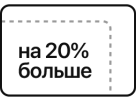

Почти невесомый
На новой высоте
Это самый любимый Mac, в который можно заново влюбиться. Новый MacBook Air — ещё более тонкий и лёгкий, оснащён дисплеем Retina, Touch ID, клавиатурой нового поколения, трекпадом Force Touch. И представлен в трёх цветах — серебристом, золотом и «серый космос». Это самый экологичный Mac. Сохранив его культовый дизайн, мы использовали для корпуса только переработанный алюминий. И это невероятно удобный MacBook Air — он работает весь день без подзарядки и может справиться с любыми задачами
Дисплей Retina
Четыре миллиона пикселей
Один великолепный дебют
В четыре раза больше пикселей, чем на HD‑дисплее, — вашим глазам понравится. Более детальное и поразительно реалистичное изображение. И текст настолько чёткий, что электронные письма и документы выглядят будто напечатаны на бумаге. Дисплей отображает на 48% больше цветов по сравнению с моделями предыдущего поколения, поэтому изображение становится ярче и живее. Стекло дисплея занимает всю поверхность от края до края рамки корпуса, а сама рамка стала тоньше на 50%. Теперь у вас ещё больше места для контента. И ещё больше поводов не просто смотреть, но любоваться тем, что вы видите
- Дисплей Retina 13,3” с высоким разрешением
- На 48% больше цветов по сравнению с предыдущим поколением
- Поразительная чёткость текста
Touch ID
Пароль — ваш
отпечаток пальца
Теперь технология Touch ID встроена и в MacBook Air. Она защищает вашу личную информацию и открывает доступ к ней только вам. Просто приложите палец к датчику Touch ID, и Mac разблокируется. Точно так же вы можете мгновенно открыть защищённые паролем документы, заметки и системные настройки. Другие пароли вводить не понадобится. Делать покупки в онлайн-магазинах тоже стало проще: выберите Apple Pay при оформлении заказа и оплатите одним касанием. При этом не нужно вводить адрес доставки и платёжную информацию, а данные карты никуда не передаются. С Touch ID ваша личная информация будет только вашей
- Быстро разблокируйте Mac без ввода пароля
- Безопасно оплачивайте онлайн‑покупки с Apple Pay
-
 Мгновенно открывайте защищённые паролем документы
Мгновенно открывайте защищённые паролем документы
Apple T2 Security Chip
Apple T2 Security Chip — чип второго поколения, созданный Apple специально для Mac, обеспечит ещё более надёжную защиту данных на вашем MacBook Air. Когда при помощи Touch ID вы разблокируете Mac, открываете документы и оплачиваете покупки онлайн, ваша информация остаётся в безопасности. Все данные, которые хранятся на SSD-накопителе, сразу автоматически шифруются. Apple T2 Security Chip также поддерживает функцию «Привет, Siri» на MacBook Air. Ваш голосовой помощник всегда готов открыть приложение, найти документ, включить музыку или ответить на вопрос.
Клавиатура
Улучшена. Буквально
Клавиатура нового поколения на MacBook Air оснащена механизмом «бабочка», поэтому клавиши реагируют на прикосновения в четыре раза стабильнее по сравнению с механизмом «ножницы». В результате скорость отклика — выше, а набор текста — комфортнее. Благодаря клавишам с индивидуальной подсветкой и датчику внешней освещённости текст удобно набирать даже при слабом освещении
- Точный и стабильный отклик клавиш
Трекпад Force Touch
Трекпад Force Touch умеет распознавать множество команд, точно определяя малейшие различия в силе нажатия на поверхность. При этом любые жесты Multi-Touch можно выполнять на всей поверхности увеличенного трекпада. Ваши пальцы будут чувствовать себя как дома
-  Больше места для жестов Multi Touch
Производительность
Весь ваш. Весь день
Новый MacBook Air весит всего 1,25 кг, а способен на многое. Процессор Intel Core i5 восьмого поколения легко справляется с разными задачами — от чтения писем и просмотра сайтов до создания презентаций в Keynote и монтажа видео в iMovie. Память до 16 ГБ позволяет работать в нескольких приложениях сразу, а SSD‑накопитель до 1,5 ТБ — мгновенно открывать приложения и хранить множество документов, фото и видео
- Память до 16 ГБ
- SSD‑накопитель ёмкостью до 1,5 ТБ
- Вес 1,25 КГ
- Процессор Intel Core i5 8-го поколения
- Новейшие стандарты беспроводного подключения Wi‑Fi 802.11ac и Bluetooth 4.2
- 15,6 мм максимальная толщина корпуса
Время работы от аккумулятора
MacBook Air работает до 12 часов без подзарядки, чтобы быть полезным с утра до вечера. Проверяйте почту, просматривайте сайты, покупайте онлайн, смотрите видео, работайте с таблицами и выполняйте другие задачи — розетка не понадобится. У вас долгий перелёт? MacBook Air готов развлекать вас фильмами до 13 часов без перерыва
Thunderbolt 3
Один для всех. И всё в одном
Thunderbolt 3 объединил высочайшую пропускную способность с функциональностью интерфейса USB‑C. В итоге получился высокоскоростной и универсальный порт. А у MacBook Air их даже два. Порт Thunderbolt 3 позволяет передавать данные, заряжать устройства и выводить видео на дополнительные мониторы через один и тот же разъём. При этом его скорость может достигать до 40 Гбит/с — это в два раза выше, чем у Thunderbolt 2. Ваши устройства легко подсоединяются всего одним кабелем или кабелем с адаптером. Порт Thunderbolt 3 двусторонний, поэтому при подключении не нужно думать, где у него верх, а где низ
- Зарядка
- Мониторы
- Накопители
- Устройства
Динамики и камера
Звук, который говорит сам за себя
MacBook Air звучит ещё лучше с новыми технологиями обработки и настройки звука. В стереодинамиках басы усилены в два раза, а громкость увеличена на 25% по сравнению с моделями предыдущего поколения. С объёмным реалистичным стереозвучанием впечатление от музыки или фильма станет тоже объёмнее и ярче. Благодаря камере FaceTime высокого разрешения ваши друзья смогут видеть вас более чётко во время персональных или групповых звонков. А три микрофона ещё точнее передают ваш голос, когда вы звоните по FaceTime, пользуетесь диктовкой и произносите команды для Siri
- В 2 раза усилены басы для более объёмного звука
- На 25% громче, чем модели предыдущего поколения
- Три микрофона для более точной передачи голоса
- HD‑камера FaceTime для общения с одним или несколькими собеседниками
Материалы
Первый корпус Mac, для которого используется только переработанный алюминий
Компания Apple разработала сплав, для которого не нужен первичный алюминий. При этом корпус сохраняет прежние характеристики прочности и долговечности. Сплав создан специально, чтобы использовать мелкие частицы переработанного алюминия, структура которых оптимизируется на атомном уровне. Результат: стильный, невероятно прочный корпус, как у всех наших устройств. Но этот Mac — самый экологичный
- На 47% меньше выбросов парниковых газов по сравнению с моделями предыдущего поколения
- Прочный и надёжный алюминий серии 6000